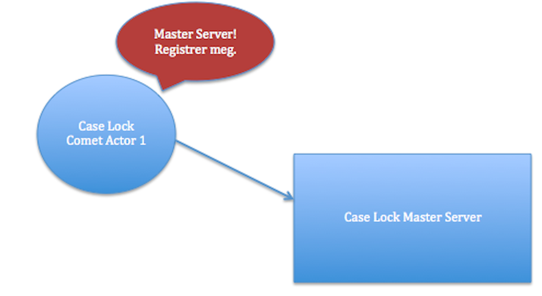
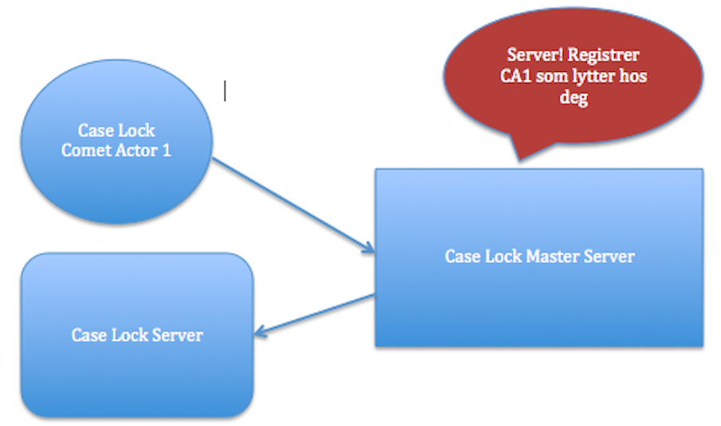

Lift Comet Actors
Introduksjon
- Lift: Web-rammeverk for Scala
- Comet Actor: Actor-implementasjon i Lift
- Oppdatere browser med push data
- MasterServer - CometServer - CometActor
- Demo: Låse saker i saksbehandling
Initsialisering 1
Første actor opprettes ved initsiell request...
div class="lift:CaseLockSnippet.view?caseIdent=1;userIdent=1"
class CaseLockSnippet {
def view = {
val caseIdent = S.attr("caseIdent") openOr ""
val userIdent = S.attr("userIdent") openOr ""
"*" #> {
div id="lockActorContainer" class={
"lift:comet?type=CaseLockCometActor;name="+
Seq(caseIdent, userIdent).mkString("_")}
}
}
}
Initsialisering 2
... og registrerer seg hos MasterServeren.
class CaseLockCometActor extends
CometActor with CometListener {
lazy val caseIdent = name.open_!.split("_")(0).toInt
lazy val userIdent = name.open_!.split("_")(1).toInt
var currentCase: Option[Case] = None
private lazy val lockServer = CaseLockMasterServer
override def registerWith = lockServer
}

Initsialisering 3
Server opprettes av MasterServeren, og Actoren registreres som lytter
object CaseLockMasterServer extends LiftActor {
private val servers = new HashMap[Int, LM]()
def createServer(cometActor: CA): LM =
new CaseLockServer(cometActor.caseIdent)
protected def messageHandler: PartialFunction[Any, Unit] = {
case addAListener @ AddAListener(cometActor: CA, _) =>
val op = createServer(cometActor)
val server = servers.getOrElseUpdate(key(cometActor), op)
server ! addAListener
}
}

En Server opprettes av MasterServeren, og Actoren registreres som lytter
Andre actor opprettes ved initsiell request og registrerer seg hos MasterServeren.
Actor registreres som lytter på samme server som ble opprettet i steg 2.
...
Når bruker navigerer bort fra side fjernes actor som lytter